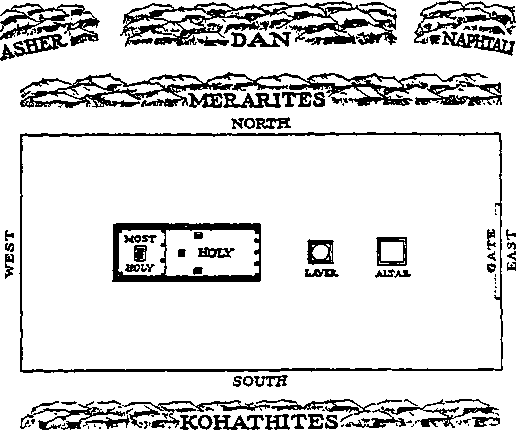

Published Semimonthly By
Officers
N. H. Knobs. President W. E. Van Ambubgh, Secretary
THE BIBLE CLEARLY TEACHES
THAT JEHOVAH Is the only true God, from everlasting to everlasting, and Is the Maker of heaven and earth and Giver of life to his creatures; that the Word or Logos was the beginning of his creation and his active agent in creating all other things; and that the creature Lucifer rebelled against Jehovah and raised the issue of His universal sovereignty;
THAT GOD created the earth for man, made perfect man for the earth and placed him upon it; that man yielded to unfaithful Lucifer, or Satan, and willfully disobeyed God’s law and was sentenced to death; that by reason of Adam’s wrong act all men are born sinners and without the right to life;
THAT THE LOGOS was made human as the man Jesus and suffered death in order to produce the ransom or redemptive price for obedient men; that God raised up Christ Jesus divine and exalted him to heaven above every other creature and clothed him with all power and authority as head of God’s new capital organization;
THAT GOD’S CAPITAL ORGANIZATION is a Theocracy called Zion, and that Christ Jesus is the Chief Officer thereof and Is the rightful King of the new world; that the faithful anointed followers of Christ Jesus are Zion’s children, members of Jehovah’s organization, and are His witnesses whose duty and privilege It is to testify to Jehovah’s supremacy and declare his purposes toward mankind as expressed in the Bible;
THAT THE OLD WORLD, or Satan’s uninterrupted rule, ended AD. 1914, and Christ Jesus has been placed by Jehovah upon the throne, has ousted Satan from heaven, and now proceeds to vindicate His name and establish the “new earth";
THAT THE RELIEF and blessings of the peoples can come only by Jehovah's kingdom under Christ, which has begun; that His next great act is to destroy Satan’s organization and establish righteousness completely In the earth ; and that under the Kingdom the people of good-will surviving Armageddon will carry out the divine mandate to “fill the earth” with righteous offspring, and that the human dead in the graves will be raised to opportunities of life on earth.
ITS MISSION
HIS journal Is published for the purpose of enabling the people to know Jehovah God and his purposes as expressed in the Bible. It publishes Bible instruction specifically designed to aid Jehovah’s witnesses and all people of good-wllL It arranges systematic Bible study for Its readers and the Society supplies other literature to aid in such studies. It publishes suitable material for radio broadcasting and for other means of public instruction In the Scriptures.
It adheres strictly to the Bible as authority for its utterances. It is entirely free and separate from all religion, parties, sects or other worldly organizations. It is wholly and without reservation tor the kingdom of Jehovah God under Christ his beloved King. It is not dogmatic, but Invites careful and critical examination of Its contents in the light of the Scriptures. It does not Indulge In controversy, and its columns are not open to personalities.
Yearly Subscription Prick
United States, J1.00; all other countries, $1.60, American currency; Great Britain, Australasia, and South Africa, 6s. American remittances should be made by Postal Note cr by Postal or Express Money Order or by Bank Draft. Outside of the United States remittances should be made direct to the respective branch offices. Remittances from countries other than those mentioned may be made to the Brooklyn office, but by International Postal Money Order only.
Foreign Orness Australia ■ — - ■ 7 Beresford Rd., Strathfield, N. S. W.
Canada - —-______—___40 Irwin Ave., Toronto S, Ontario
England - ■ ■ _______ 34 Craven Terryce, London, W. 2
India.....______.... 167 Love Lane, Bombay 27
Newfoundland P. O. Box 521, St. John’s
New Zealand 177 Daniell St., Wellington, S. 1
Philippine Mande 1219-B Oroquieta St.. Manila
South Africa , ...... -___623 Boston House. Cape Town
Please address the Society in every case.
Translations of this Journal appear In several languages.
ALL SINCERE STUDENTS OF THE BIBLE who by reason of infirmity, poverty or adversity are unable to pay the subscription price may have The Watchtower free upon written application to the publishers, made once each year, stating the reason for so requesting it We are glad to thus aid the needy, but the written application once each year is required by the postal regulations.
Notice to Subscribers: Acknowledgment of a new or a renewal subscription will be sent only when requested. Change of address, when requested, mav be expected to appear on address label within one month. Old and new addresses must be given. A renewal blank (carrying notice of expiration) will be sent with the journal one month before the subscription expires.
Printed In the United States of America
Entered as second-class matter at the post office at Brooklyn, N. 7., under the Act of Starch S, 1879
“DEFENSE THROUGH KNOWLEDGE” TESTIMONY PERIOD
The above-named Testimony Period coincides with the entire month of June. In casting up as strong a bulwark of defense as possible through the knowledge of God’s Word, Jehovah’s witnesses will, throughout this Testimony Period, make a special offer of Bible literature. On a contribution of 50c they will offer and place from house to house the combination of three bound books and a copy of the booklet "Be Glad, Ye Nations”. The three books may be any of the Watchtower series from The Harp of God to Religion, inclusive. Many of our readers see clearly that it is not good that the soul be without knowledge in this most crucial time of world history, and hence they will want to join in spreading the life-saving knowledge through the distribution of this special offer of literature. We shall welcome any requests from such readers for information on how to have a part with others in this “Defense Through Knowledge” Testimony Period. Write us without delay, and may you at the close of June be privileged to make your report of work accomplished along with all other faithful Kingdom publishers.
“WATCHTOWER” STUDIES
Week of July 7: “Ordaining the New World’s Priesthood,” fl 1-20 inclusive, The Watchtower June 1, 1946.
Week of July 14: “Ordaining the New World’s Priesthood,” fl 21-40 inclusive, The Watchtower June 1, 1946.
SOCIETY’S ADDRESS
Hereafter all communications mailed to the Society should be addressed as follows:
Watchtower Bible and Tract Society
117 Adams St., Brooklyn 1, N. Y.
When writing to the Society at 124 Columbia Heights, the address should be Brooklyn 2, N. Y., as this is in a different district from 117 Adams Street.
This is required in order to comply with the request by the U. S. Post Office Department to facilitate tie handling of mail at the General Post Office in Brooklyn, New York.
USE RENEWAL SUBSCRIPTION BLANK
The blank sent you one month before expiration of yonr Watchtower subscription should be filled out and returned to the Brooklyn office or to. the Branch office in the country where you reside. Servants in the companies, and individuals, when sending in renewals for The Watchtower, should always use these blanks. By filling in these renewal blanks you arc assured of the continuation of your Watchtower from the time of expiration, and without delay. It will also be a great help if you sign your name uniformly, and note any recent change of address, on the renewal slip.
Vol. LSV1I
June 1,1946
No. 11
“For every high priest taken from among men is ordained for men in things pertaining to God, that he may offer both gifts and sacrifices for sins." —Heb. 5:1.
his household and property. The scene, as described for us by Moses, at Genesis 14:17-20, is laid out as follows: “And the lung of Sodom went out to meet [Abram], after his return from the slaughter of Chedorlaomer and the kings that were with him, at the vale of Shaveh (the same is the King’s Vale). And Melchizedek king of Salem brought forth bread and ■wine: and he was priest of God Most High. And he blessed him, and said, Blessed be Abram of God Most High, possessor of heaven and earth: and blessed be God Most High, who hath delivered thine enemies into thy hand. And he [that is, Abram] gave him a tenth of all.”—Am. Stan. Ver.
* Abram (or Abraham) received the blessing from the priest-king Melchizedek. In recognition of Melchizedek’s connection with the Most High God, Abraham gave tithes to the priest of all the goods that he had taken from the defeated enemies. Little did Abraham realize at that time that he was to be the forefather of a priesthood ordained of Jehovah the Most High God, namely, the priesthood of the tribe of Levi, of which priesthood Aaron the Levite would be the first high priest. Hence through their forefather Abraham, this Levitic priesthood was really receiving a blessing from Melchizedek and, through Abraham, the Levitic priesthood was paying tithes to Melchizedek. Both these facts prove that Melchize-delds order or rank of priesthood was higher than that of Aaron and the Levitic priesthood. All this is significant, for every informed Jew knows that Melchizedek the king-priest was used of the Eternal God as a picture of a great king-priest to come. In proof of that fact every such Jew knows that King David wrote these words, at Psalm 110:1-5: “By David, a psalm. The Eternal saith unto my lord, Sit thou at my right hand, until I place thy enemies as a stool for thy feet. The staff of thy strength will the Eternal stretch forth out of Zion: rule thou in the midst of thine enemies.... The Lord hath sworn, and will not repent of it, Thou shalt be a priest for ever after the order of Malld-zedek. The Lord at thy right hand 4. How does this prove the Melchizedek priesthood to be higher than the Levitic? and how does Psalm 110 prove whom he pictures?
TEHOVAH has ordained the needed priesthood for I the New World of righteousness. “Ordain” means J “to place or set down in office”; and the ordination or appointment of this priesthood is one of the guarantees that the New World which Jehovah God creates will be a righteous world, freed from all guilt of sin.
2 The need of a priesthood has been recognized by most nations, ancient and modern, as shown by their setting up a priesthood either supported by the state or supported by the common people. Such priesthoods have effected nothing for men but deception, because they were not ordained of the God against whom man has done wrong, and they have not had the proper sacrifice. The kind of priest that humankind has needed is one who could go up to heaven itself, into the very presence of the Most High God, and there present a sacrifice that met perfectly all the requirements of divine justice. No human priest could do this, because he is a material creature of flesh and blood, whereas the heaven of God’s presence is spiritual and beyond the physical reach of man. This is the very reverse of human priests who claim to be clothed with mystical power to bring God down from heaven in flesh-and-blood form upon their altars in order that the priest may sacrifice such God and eat and drink him like a cannibal. The fact that the nations have continued to degrade themselves in sin and wickedness in spite of the rites and ceremonies of such human priests emphasizes the need of the true Priest of the true and living God.
3 The first man mentioned in sacred Scripture who was ordained by God to be priest was Melchizedek. What was outstanding about this priest was that he was at the same time a king, being ruler of the city of Salem in Palestine. He stepped upon the scene when meeting that man of faith, Abraham, after Abraham had defeated the enemies who had assaulted and carried away captive his nephew Lot and all 1. What dees “ordain” mean? and what has Jehovah ordained for the righteous New World?
2. What kind of priest has humankind needed? and what fact emphasizes this need? , , „
3. Whom do the Scriptures mention as the first priest ordained of God? and under what circumstances did he come upon the scene?
crusheth kings on the day of his wrath.”—Isaac Leeser’s translation of 1853.
s Thus King David, by inspiration of the spirit of Jehovah God, spoke of another priest different from the priesthood with which David was acquainted. In David’s day Zadok was the high priest of the Levitic priesthood, but the new priesthood that was to come was not to be like the Levitic, but to be like Melchizedek’s priesthood. King David acknowledged that this coming priest would be a King higher even than himself, for King David spoke of this future Melchiz-edekian priest as “my lord”. Also this coming King would not disappear off the scene as the ancient Melchizedek did, because the Eternal God, Jehovah, swore that this new King greater than David should be a “priest for ever". He would have an imperishable priesthood. His priesthood would not be passed on to any successor nor handed over to any vicar or vicegerent on earth, but would always be his because of living forever.
6 Every honest Jew must admit, and every honest Gentile will agree, that this coming King •with a priesthood forever like Melchizedek’s must be the Messiah or Anointed One whose coming all the prophets, from Moses to Malachi, foretold. And since Abraham confessed to earthly Melchizedek’s superiority over him by receiving Melchizedek’s blessing and paying him tithes, therefore the everlasting priesthood of the Messiah must be greater than that Levitic priesthood of Aaron, because Melchizedek was greater than Aaron and the Messiah is greater than Melchizedek. The Levitic priesthood was established by Jehovah God’s law through Moses. But since the Messianic priest was to arise after the order or rank of Melchizedek, it proves that the Levitic priesthood from Aaron was to be done away with on Messiah’s coming. This meant also a change in God’s law, because the Messianic Melchizedek was to be made a priest not by the law of Moses but by the sworn oath of Jehovah God. This change would not be for the hurt of the Jews, but be for their betterment and -with benefit to humankind in general.
T The law of Moses appointed or ordained the Levitic priests to offer sacrifices of animals whom God placed under man’s dominion in Eden. (Gen. 1:26, 28) In the very nature of things, therefore, such animal sacrifices could not take away the sins of jnankind who had once been given dominion over such animals. Moreover, the Levitic priests by offering such animal sacrifices could only get into the symbolic presence of Jehovah God as represented by the sacred chest or ark in the Most Holy of the taber-5. Why would he be a king higher than David and also have an untransferable priesthood ?
6. How does this show that the Messianic priesthood would be higher than the Levitic and would set it and Its law aside?
7. To be better than the Levitic priesthood, what must be true of the coming Messianic Priest?
nacle. If the Messiah or coming Priest after Melchizedek’s order was to be better than the Levitic priesthood, then he must have a better sacrifice, a sin-removing sacrifice, and he must be able to get into God’s actual presence in the heavens in order to offer the value of this better sacrifice.
• No sincere Jews today will deny the need of such a priest. Look at the persecuted Jews. Their situation today reminds us of the words of the prophet Hosea: “For the Israelites shall remain for many a day 'without king or chief, without sacrifice or sacred stone, without ephod or oracle; after that, the Israelites shall turn to seek the Eternal their God once more, and their Davidic king, and at the end come eagerly to the Eternal and his goodness.” (Hos. 3:4,5, Moffatt) Today, although there are many Jews bearing the family name of Cohen, meaning priest and suggesting that their ancestors Were Levitic priests, yet the Jews have no priest or high priest whose line of descent proves him to be descended from Aaron the high priest. Also, the Jews have no sacrifice according to the law of Moses. Furthermore, they have no temple with a Most Holy inhabited by the symbolic presence of Jehovah God. Certainly God did not set up the Levitic priesthood in vain; and certainly, too, their having actually passed out of existence could not possibly defeat the unchangeable purpose of Jehovah God.
’ As above shown, the sworn oath of God respecting the coming priesthood forever after the order of Melchizedek was a forewarning that the Levitic priesthood would some day pass away, never to be restored, because the Melchizedekian priesthood would be forever and untransferable. Evidently, then, the Levitic priesthood did not serve in vain. For its time it served to provide both Jews and Gentiles •with living motion pictures of the real sin-removing service and the human uplift that the coming Melchizedekian priest would bring about. The ancient services of the Levitic priests were simply foreshadowings of better things ahead. Hence, what the Jews today should look for is not the restoration of the Levitic priesthood nor the rebuilding of a material temple at Jerusalem with a Most Holy and ark of the covenant. What the Jews who sincerely believe in the Law and the prophets and the Psalms should look for is the realities which were foreshadowed and prophesied. In other words, what they should look for now is the everlasting Priest whom Jehovah’s sworn oath has made after the order of Melchizedek and higher than the Levitic priesthood and having a better temple than a material one over in Jerusalem in Palestine. That One greater than Aaron and David is the promised Messiah or Anoint-
8. Why must sincere Jews confess the need of such a priest today? 9. Why did the Levitic priesthood not serve in vain? and for what should the Jews therefore now look? ed One, or, as the ancient Greek-speaking Jews called him, Christ.
THE NEEDED ONE IDENTIFIED
10 Who this anointed Melchizedeldan Priest is we leave for a natural Hebrew to identify for us. Writing to the Hebrews, Paul of Tarsus wrote, at Hebrews 4:14-16 and 5:1-10: “Seeing then that we have a great high priest, that is passed into the heavens, Jesus the Son of God, let us hold fast our profession. For we have not an high priest which. cannot be touched with the feeling of our infirmities; but was in all points tempted like as we are, yet without sin. Let us therefore come boldly unto the throne of grace, that we may obtain mercy, and find grace to help in time of need. For every high priest taken from among men is ordained for men in things pertaining to God, that he may offer both gifts and sacrifices for sins: who can have compassion on the ignorant, and on them that are out of the way; for that he himself also is compassed with infirmity. And by reason hereof he ought, as for the people, so also for himself, to offer for sins. And no man taketh this honour unto himself, but he that is called of God, as was Aaron. So also Christ glorified not himself to be made an high priest; but he that said unto him, Thou art my Son, to day have I begotten thee. [Psalm 2: 7] As he saith also in another place, Thou art a priest for ever after the order of Melchisedec. [Psalm 110:4] ... And being made perfect, he became the author of eternal salvation unto all them that obey him; called of God an high priest after the order of Melchisedec.” How his priesthood was ordained in actuality we shall now see.
11 The Levitic priesthood was not broken up and put out of office until the Romans destroyed Jerusalem in the year 70 of our common era. Hence, when Paul wrote the above statement to the Hebrews the Levitic priests were still serving at the temple in Jerusalem. He wrote: “There are priests that offer gifts according to the law: who serve unto the example and shadow of heavenly things, as Moses was admonished of God when he was about to make the tabernacle: for, See, saith [God], that thou make all things according to the pattern shewed to thee in the mount.” (Heb. 8:4,5) Seeing, now, that those Levitic priests served chiefly as a pattern and shadow of heavenly things or higher realities to come, we look back at the ancient shadows and compare them with the actual realities as recorded in history. By the faithful activities of those Levitic priests as provided by divine law Jehovah God was making them produce a living motion-picture, a historic document that foreshadowed future history in advance. We shall now see this historic document 10. How does the apostle Paul identify this Melchizedekian priest and show bow he was made?
11. Why do we now look back at the activities of those Levitic priests? unreeled before our gaze, to shadow forth the ordination of the New World’s priesthood. As it moves by, let our minds at times turn from the typical shadows on the Bible screen before us and meditate upon the substantial realities. The God who provided the shadow patterns also reveals to us in His inspired Word what are the heavenly realities.
12 We turn back to Leviticus, the third book of the Bible, and to chapters eight and nine, regarding the ordination and installation of the Levitic priesthood. God’s orders and instructions on how to put Aaron and his sons in the priests’ office by the suitable succession of symbolic acts were given to Moses at
Exodus, chapter twenty-nine; but Leviticus, chapters eight and nine, tells how Moses actually carried them out. As we look at the prophetic picture-screen, we are transported into the distant past. The clock is turned back to the year 1512 B.C., to the first day of the month Abib (or Nisan) in the spring of the year. It is just thirteen days less than a year since the twelve tribes of Israel marched out of Egypt under Moses’ leadership. We find ourselves now in the midst of the congregation of Israel assembled outside the linen-curtain enclosure round about the sacred tabernacle of worship. But we are all in front of it, that is, to the east of it, before its gate which looks to the east. The hangings of this twenty-cubit (or thirty-foot) broad gate have been drawn up and aside, however, and we can look into the court surrounding the tabernacle.
13 This court measures fifty by one hundred cubits,
12. Where do we find the record of the ordaining of the Levitic priests? and in looking back where do we locate ourselves?
13. What things and persons do we see inside the tabernacle court? or 75 feet by 150 feet. First inside the court there is visible to us the copper altar of sacrifice. Behind it is located the copper laver or bath for the tabernacle servants to wash. And beyond the laver we see the gorgeous hanging, ten cubits or fifteen feet square, which constitutes the door of the tabernacle. This tabernacle is only thirty cubits or forty-five feet long, and, by a veil suspended inside, it is divided into two compartments, the first called the Holy, of ten by twenty cubits in dimensions, and the second called the Most Holy, of ten by ten cubits. We cannot see into the tabernacle, because the door hanging is down to us, inasmuch as we are not Levitic priests. The tabernacle arrangement has just been set up this day, and the priests must now be put in office. (Ex. 40:16-33) We are gathered in obedience to God’s command to Moses: “Gather thou all the congregation together unto the door of the tabernacle of the congregation.” And Moses has done as Jehovah has commanded him. (Lev. 8:1-4) Inside’the court we see the prophet Moses serving as God’s representative in charge of all the doings there today and for the next seven days, or from Nisan 1 to 8. Near Moses we also see his brother, Aaron, and Aaron’s four sons, Nadab, Abihu, Eleazar and Ithamar. The five men, namely, Moses’ brother and nephews, are dressed just like other Israelites. That is because they have not yet been ordained and installed as priests of Jehovah God to serve him in behalf of the twelve tribes of Israel.
14 But over there in the court we see what appears to be a sacred wardrobe ready to be donned by the priests when being sanctified into the priestly service. To “sanctify” means “to set apart to the holy service of Jehovah God”; and those articles for wear are holy official garments. There is the outfit of Aaron the high priest. The white linen coat or tunic is to be worn next to his body; and there is a linen girdle or sash for it. Then there is the robe of blue to be worn above this. The ephod, or apron, with a front and back piece is slipped on over Aaron’s head and is to be worn above the blue robe and to be held tight by a skillfully woven sash or girdle. This apron is a beautiful piece of embroidered work, and upon the front there is attached to it by gold rings and gold wreathed chains the breastplate or judicial pouch; rational, some Roman Catholics of today might call it. By its position Aaron would carry this breastplate of judgment or judicial pouch over his heart and just above that curious girdle or sash which went with the ephod-apron. Inside this jewel-studded pouch are to be put the sacred lots known as the Urim and Thummim. For Aaron’s headpiece there is a miter or turban; and a gold crown or platepiece to be attached to the forefront of the turban by 14. What official garments have been prepared for Aaron as high priest? a blue lace. On the gold plate are engraved the words, “Holy to Jehovah.” With the turban on, Aaron would wear these sacred words above his forehead.
18 All these things are for priestly wear and were made by the Israelites in obedience to God’s command to Moses: “Thou shalt make holy garments for Aaron thy brother, for glory and for beauty. . . . make Aaron’s garments to sanctify him, that he may minister unto me in the priesf s office.”—Ex. 28:1-39, Am. Stan. Ver.
18 Then, too, we see the official apparel for Aaron’s four sons, white linen coats or tunics with sashes, and white linen breeches, and bonnets or caps. These also vvere made by devoted Israelite hands, in obedience to Jehovah’s orders: “For Aaron’s sons thou shalt make coats, and thou shalt make for them girdles, and head-tires shalt thou make for them, for glory and for beauty. And thou shalt put them upon Aaron thy brother, and upon his sons with him, and shalt anoint them, and consecrate them, and sanctify them, that they may minister unto me in the priest’s office. And thou shalt make them linen breeches to cover the flesh of their nakedness; from the loins even unto the thighs they shall reach: and they shall be upon Aaron, and upon his sons, when they go in unto the tent of meeting, or when they come near unto the altar to minister in the holy place; that they bear not iniquity, and die: it shall be a statute for ever unto him and unto his seed after him.” (Ex. 28:40-43, Am. Stan. Ver.) Thus there was to be no shameless ministering at Jehovah’s sacred altar stark naked the way many of the heathen priests did before their false gods; but Jehovah’s priests must be clothed in official garments according to the pattern he laid down. Otherwise, Jehovah God would kill them. No shoes or sandals were provided for the priests, evidently because they trod holy ground inside the tabernacle, and must do what God said to Moses at the burning bush: “Put off thy shoes from off thy feet, for the place whereon thou standest is holy ground.”—Ex. 3: 5.
17 Inside we see tied several animals. One of them is a bullock, a fine-looking specimen without a blemish; and it is to be offered for a sin-offering. The other two animals are rams, unblemished; and one of them is to be offered as a whole burnt-offering and the other is to be offered as the ram of consecration or ram of installation. Near by also is a basket of baked things, unleavened cakes, wafers, and cakes of oiled bread. They go with this second ram.
ORDINATION
18 Now Moses steps forward and addresses the congregation of onlookers: “This is the thing which
15. By whom were these garments made, and why?
16. What garments, and by whom, were prepared for Aaron’s sons? and why no footwear?
17. What beasts do we see tn the court? and what is in the basket? 18. Why do we watch the proceedings closely? and what do we keep in mind regarding Aaron and his sons as types?
Jehovah hath commanded to be done.” We watch closely what is now done. We want to see the prophetic preview of what takes place in ordaining the “priest for ever after the order of Melchizedek” and his followers who become members of his royal priesthood. We keep in mind that Aaron the high priest typifies or foreshadows Christ Jesus as High Priest, and that the sons of Aaron picture the footstep followers of Christ who are underpriests of his royal priesthood. To these the apostle Paul writes: "In all things it behoved him to be made like unto his brethren, that he might be a merciful and faithful high priest in things pertaining to God, to make reconciliation for the sins of the people. For in that he himself hath suffered being tempted, he is able to succour them that are tempted. Wherefore, holy brethren, partakers of the heavenly calling, consider the Apostle and High Priest of our profession, Christ Jesus.”—Heb. 2:17,18; 3:1.
18 First Moses brings the prospective priests to the copper laver of water. “And Moses brought Aaron and his sons, and washed them with water.” (Lev. 8:6) Aaron being a sinful man who once made a golden-calf idol at the insistence of the disobedient Israelites, he needed washing in symbol of a spiritual cleansing, before being clothed with his official garments. In his cleansed state of body he pictured the perfect man Jesus at the time that he offered himself in full dedication to God to do what was henceforth the divine will for him. Therefore it is written of Jesus: “For such an high priest became us, who is holy, harmless, undefiled, separate from sinners, and made higher than the heavens.” (Heb. 7:26) But as concerns Jesus’ faithful followers who are recruited from among the sinful descendants of Adam, these do need cleansing by the washing in the waters of heavenly truth. As Moses washed Aaron’s sons, so Jesus washes the other members of the royal priesthood, the church. “Even as Christ also loved the church, and gave himself for it; that he might sanctify and cleanse it with the washing of water by the word, that he might present it to himself a glorious church, not having spot, or wrinkle, or any such tiling; but that it should be holy and without blemish;” (Eph. 5:25-27) The submitting to being washed symbolizes the person’s obedience to the truth.
20 The High Priest, Christ Jesus, said to an inquirer for truth: “Except a man be born again, he cannot see the kingdom of God. . . . Except a man be born of water and of the spirit, he cannot enter into the kingdom of God.” (John 3:3,5) Hence Aaron and his sons, in their washed condition, picture Jesus
19. What did Moses’ washing of Aaron and his sons picture?
20. In their washed condition whom did Aaron and his sons picture? and when and why did Jesus on eaith enter into an agreement to do God’s will? and his footstep followers as having obeyed the truth to the point of entering into an agreement with God to do his will and then being born of water (truth) and of the spirit. That signifies that they have been begotten of Jehovah God by his spirit of life and thereby been made his spiritual sons or children. Jesus entered into such an agreement to do his heavenly Father’s will, because the sacrifices of the Levitic priests were not bringing about the perfection of humankind. “Wherefore when he cometh into the world, he saith, Sacrifice and offering thou would-est not, but a body hast thou prepared me: in burnt offerings and sacrifices for sin thou hast had no pleasure. Then said I, Lo, I come (in the volume of the book it is written of me,) to do thy will, 0 God.” (Heb. 10: 5-7) Hence, at the Jordan river, Jesus was baptized in symbol of this agreement to do the divine will and then Jehovah God begot him by the spirit and His voice came from heaven, saying: “This is my beloved Son, in whom I am well pleased.” (Matt. 3:13-17) That testified that God had brought forth Jesus as his spiritual Son and he was now a new creature.
21 In order to be ordained as the underpriests of the royal priesthood, the footstep followers must be conformed to their High Priest by maldng an unconditional agreement to do God’s will and then being begotten and brought forth as God’s spiritual sons, Christ’s brethren, new creatures. And so it is written to these underpriests: “Of his own will begat he us with the word of truth [water], that we should be a kind of firstfruits of his creatures.” “Therefore if any man be in Christ, he is a new creature: old things are passed away; behold, all things are become new. And all things are of God.” (Jas. 1:18; 2 Cor. 5:17,18) For such reason the washed Aaron and his washed sons picture Jesus and his followers as new creatures, the begotten spiritual sons of God. It is such that the Most High God ordains to be priests, clothing them upon with the official duties of priestly service. Therefore as we follow the proceedings of Moses with Aaron and his sons, let us view them fiom this new standpoint.
22 Having washed Aaron, Moses went and got the glorious high-priestly garments for Aaron. “He then put the tunic on him, girded him with the sash, clothed him with the robe, put the apron on him, girding him with the skilfully made girdle of the apron and fastening it around him with it, placed the pouch on him, putting the Urim and Thummim in the pouch, and set the turban on his head, placing the gold diadem, the sacred crown, on the front of the turban, as the Lord had commanded Moses.” (Lev. 8: 7-9, An
21. How must the underprie^ts be conformed to their High Priest? and whom, therefore, does God ordain to the piiesthood*5
22. How did Moses then clothe Aaron? and whom did Aaron thus clothed picture?
American Translation) It was Jesus as a new creature, from the Jordan river onward, that was thus clothed for service as High Priest.
23 The linen coat or tunic symbolized his righteousness ; “for the fine linen is the righteous acts of the saints.” (Kev. 19:8, Am. Stan. Ver.) Its linen sash showed him to be a servant of righteousness. (Isa. 11: 5) The blue robe, with its fringe of tinkling bells and woven pomegranates alternately placed, pictured his trueness and faithfulness toward God. (Num. 15:37-41) Its fringe calls attention to his fruitfulness in bringing forth the fruits of God’s kingdom and Ins making a joyful sound through preaching the Kingdom gospel and succeeding in his heavenly Father’s work. The gorgeous apron, or ephod, with its front and back parts which were hung from his shoulders, pictured the two great covenants concerning the kingdom or Theocratic Government which depended upon him. As it is written: “The government shall be upon his shoulder: and Iris name shall be called Wonderful, Counsellor, The mighty God, The everlasting Father, The Prince of Peace. Of the increase of his government and peace there shall be no end.” (Isa. 9: 6,7) The rear part of the ephod or apron could not symbolize God’s law covenant made with the Israelites through Moses, for Christ took that covenant out of the way by his death on the tree of Calvary. The ephod’s rear part, therefore, well pictures the Abrahamic covenant of the long past, according to which Jehovah God promised Abraham a seed and said: “Thy seed shall possess the gate of his enemies; and in thy seed shall all the nations of the earth be blessed.” (Gen. 22:17,18; 12:3) “Thy seed, which is Christ.” (Gal. 3:8,16) What, then, does the ephod’s front part symbolize 1
24 The Abrahamic covenant was essentially connected with God’s kingdom, because God promised Abraham, “I will make of thee a great nation,” and, “I will make thee exceeding fruitful, and I will make nations of thee, and kings shall come out of thee.” (Gen. 12:2; 17:6,16) Hence the forepart of the ephod well pictured the Kingdom covenant which God made with Abraham’s royal descendant, King David, saying: “My covenant will I not break, nor alter the thing that is gone out of my lips. Once have I sworn by my holiness that I will not lie unto David. His Seed shall endure for ever, and his throne as the sun. before me.” (Ps. 89:34-36) The Jews of today know that none of them can reliably trace his descent back to King David to prove himself to be of that king’s seed and to be heir to the Kingdom covenant. But Christ Jesus, who was of the royal seed and who was “the Son of David”, continues to be David’s seed that endures forever because in the heavens Christ
23. What did the (a) linen coat, (b) blue robe, and (c) rear part of the ephod symbolize?
24. What doe-? the ephod's front part symbolize, and why?
Jesus has immortality and hence endless life. It was on the foundation of this Kingdom covenant with David that God inspired him to write down God’s sworn oath respecting David’s Lord: "Jehovah hath sworn, and will not repent: Thou art a priest for ever after the order of Melchizedek.” (Ps. 110:4, Am. Stan.Ver.) It is a known fact that Christ Jesus, David’s Lord, always kept God’s kingdom to the fore. He died as a martyr for giving unflinching testimony to it. The Kingdom covenant is therefore evidently pictured by the ephod’s forepart.
” The breastplate of judgment, or judicial pouch, was studded with twelve jewels bearing the names of the twelve tribes of Israel, and inside it were the sacred lots of Urim and Thummim. By it the Levi tic high priest consulted the Lord God and determined the divine will in difficult cases and rendered judicial decisions. Since this judicial breastplate or pouch was attached to the ephod’s forepart and was worn over the high priest’s heart, it calls notice to the fact that Jehovah’s King, the Seed of Abraham, acts as Judge for Jehovah. He directly consults Jehovah God to give the lights of perfection regarding God’s Word and will. He hands down God’s decisions, and during the thousand-year judgment day he •will judge humankind. Said Jesus: “The Father judgeth no man, but hath committed all judgment unto the Son. I can of mine own self do nothing: as I hear, I judge: and my judgment is just; because I seek not mine own will, but the will of the Father which hath sent me.” (John 5:22,30) Associated with him are the twelve tribes of the “Israel of God”, that is, spiritual Israel; and therefore it is written: “Do ye not know that the saints shall judge the world?” (1 Cor. 6:2) They will be 144,000 in number, and are pictured as twelve tribes of 12,000 each, who reign with Christ on the heavenly Mount Zion. “And I saw thrones,” says John, “and they sat upon them, and judgment was given unto them: and ... they lived and reigned with Christ a thousand years.... they shall be priests of God and of Christ, and shall reign with him a thousand years.”—Kev. 7:4-8; 14:1-3; 20:4, 6.
28 The New World’s High Priest, Christ Jesus, is therefore clothed with these qualities and responsibilities as pictured by the glorious garments with which Aaron was invested on his ordination day. Upon Aaron’s head was placed a miter, not a split fish-head affair such as was worn by the pagan priests of the fish-god Dagon, but a turban, denoting subjection to God. On the forefront of the turban gleamed the golden diadem or sacred crown upon which all could read the sanctifying words, “Holy to Jehovah.” Since this was for a sign to show that the high priest Aaron was set apart in his entirety to the 25. What does the bejeweled breastplate of judgment picture, and why? 20. What do the miter and Its crown, upon Aaron's head, symbolize? true God and His purpose, it foreshadowed that the crowning feature of the true and everlasting High Priest is his entire holiness to Jehovah God, his unstainable integrity toward his heavenly Father. In harmony with the words on the crown, Jesus did not defile himself with any part of this world. Holiness to Jehovah God does not permit or allow for him to compromise with this world and to set up diplomatic relations with it and to receive its ambassadors, diplomats, ministers and charges d’affaires and make concordats with their nations. Christ’s holiness to Jehovah, therefore, does not permit him to send his true and faithful underpriests as a so-called “nuncio” or “apostolic delegate” to the political nations of this world. The bona fide underpriest copies his High Priest by being always careful to “keep himself unspotted from the world”. (Jas. 1:27) Hence he is always undividedly for God’s kingdom.
ANOINTING
” Turning away now from our reflections on the true High Priest, we again look centuries back to the typical scene of the ordaining of the Aaronic priesthood before the tabernacle in the wilderness of Mount Sinai. Having invested the high priest, now what does Moses next do? Watch him: “And Moses took the anointing oil, and anointed the tabernacle and all that was therein, and sanctified them. And he sprinkled thereof upon the altar seven times, and anointed the altar and all his vessels, both the laver and his foot, to sanctify them. And he poured of the anointing oil upon Aaron’s head, and anointed him, to sanctify him. And Moses brought Aaron’s sons, and put coats upon them, and girded them with girdles, and put bonnets upon them; as the Lord commanded Moses.”—Lev. 8:10-13.
28 The anointing with the sacred oil was in fulfillment of God’s instructions at Exodus 30: 22-33. This oil was of special composition, and God restricted its use to the tabernacle and its priesthood: "This shall be an holy anointing oil unto me throughout your generations. Upon man’s flesh shall it not be poured, neither shall ye make any other like it, after the composition of it: it is holy, and it shall be holy unto you.” The anointing of the tabernacle and its furniture, and of the altar and its vessels, and of the laver and its base, and then of High Priest Aaron was a sanctifying action. That is to say, it set aside to the exclusive use and service of God the things anointed. Hence Aaron anointed was the sanctified one. The name “Mashiahh”, or “Messiah”, was applied to him. (Lev. 4: 3, 5,16; 6: 22) This name Messiah or Christ meant not only that he was Jehovah’s anointed one, but also that, because the anointing was done to
27. Having clothed Aaron, what did Moses next do?
23. (a) In a general way, what did the anointing of those things symbolize? (b) What title was therefore applied to Aaron, and what did it mean and indicate? sanctify, he was the sanctified one. The anointing oil was a symbol of God’s holy spirit or active force; it certainly was not a symbol of the third person of a “trinity". Since the oil sanctified in a pictorial way, the spirit or active force of God is what sanctifies his true High Priest, Christ Jesus, in the true way.
29 Jesus as the begotten Son of God and hence as a new creature was anointed with his Father’s spirit at the Jordan and was thus sanctified or set apart to the sacred work that God has purposed for him. “And Jesus, when he was baptized, went up straightway out of the water: and, lo, the heavens were opened unto him, and he saw the spirit of God descending like a dove, and lighting upon him.” (Matt. 3:16) “God anointed Jesus of Nazareth with the holy [spirit] and with power: who went about doing good, and healing all that were oppressed of the devil; for God was with him.” (Acts 10: 38) At such anointing Jesus as a new creature became Christ, or the Anointed and Sanctified One. Henceforth he was called “Jesus Christ” (Jesus the Anointed One) or “Christ Jesus” (The Anointed Jesus).
”We notice that Moses anointed the high priest Aaron, but not his four sons. “The precious ointment upon the head, that ran down upon the beard, even Aaron’s beard: that went down to the skirts [or, collar] of his garments.” (Ps. 133:2) This agrees with the fact that Jesus is the One whom God anointed directly, and hence he was the first one to receive the anointing of God’s spirit. This requires that his followers, who are made his underpriests, should receive the anointing of God’s holy spirit through Christ Jesus. The apostle Peter so pointed out, on the very day that God’s spirit began to be outpoured upon those who became new creatures in Christ. Peter, in explaining to the wondering onlookers the outpouring of the spirit and its manifestation, said: “This Jesus hath God raised up, whereof we all are witnesses. Therefore being by the right hand of God exalted, and having received of the Father the promise of the holy [spirit], he hath shed forth this, which ye now see and hear.” (Acts 2: 32, 33) When telling his disciples of his going away, Jesus assured them that it was in their interest that he went to heaven to his Father, for otherwise they would not get the holy spirit as a comforter or helper; but if Christ Jesus did go away to heaven, then he would send this comforting spirit to them, even the spirit of truth.—John 14:16,17; 15: 26 • 16:7,13.
31 However, this spirit of anointing proceeds from Jehovah God the Holy One as its Source; and 1 John 29. How did Jesus become Christ, and what was he thenceforth called’ 30. Why was only Aaron anointed? and how do Peter’s and Jesus’ words prose this?
31. From whom does this anointing proceed, and to all whom? and what scriptures prove this?
2:20, 27 reminds Christ’s underpriests of this, saying: “Ye have an unction [an anointing] from the Holy One, and ye know all things. But the anointing which ye have received of him abideth in you, and ye need not that any man teach you: but as the same anointing teacheth you of all things, and is truth, and is no lie, and even as it hath taught you, ye shall abide in him.” And 2 Corinthians 1:21 says: “Now he which stablisheth us with you in Christ, and hath anointed us, is God.” Coming under Jesus as the Head Priest, the disciples or underpriests become the members of his body, “the body of Christ.” Hence all partake of the one anointing with the spirit. “For as the body is one, and hath many members, and all the members of that one body, being many, are one body: so also is Christ. For by one spirit are we all baptized into one body, whether we be Jews or Gentiles, whether we be bond or free; and have been all made to drink [or, been saturated] into one spirit.”—1 Cor. 12:12,13.
32 The anointing of Aaron as high priest sanctified him to perform not only the sacrificial duties for the nation of Israel but also other duties. Among such was that of teaching the nation the Word of God. “And the Lord spake unto Aaron, saying, Do not drink wine nor strong drink, thou, nor thy sons with thee, when ye go into the tabernacle of the congregation, lest ye die:... that ye may teach the children of Israel all the Statutes which the Lord hath spoken unto them by the hand of Moses.” (Lev. 10: 8-11) And Moses said to the children of Israel: “Do according to all that the priests the Levites shall teach you: as I commanded them, so ye shall observe to do.” “They shall teach Jacob thy judgments, and Israel thy law: they shall put incense before thee, and whole burnt sacrifice upon thine altar.” (Deut. 24:8; 33:8-10) Teaching was to be an unselfish service with no thought of gain in mind which would make it a professional business. For this reason God condemned men who disobeyed his instructions and used their office at the people’s expense, saying: “The priests thereof teach for hire, and the prophets thereof divine for money.” “For the priest’s lips should keep knowledge, and they should seek the law at his mouth: for he is the messenger of the Lord of hosts.” —Mic. 3:11; Mal. 2:7.
33 Jesus, after being anointed with Jehovah’s spirit and- becoming Christ, discerned this obligation to teach to be his duty as High Priest. He did not return to his worker’s trade at Nazareth, but thenceforth he taught exclusively, by preaching the good news or gospel of the kingdom of God. When he taught the Samaritan woman at the well, the following episode
32. Besides sacrifice, to what other duties was Aaron anointed, in which his sons must share?
33. As Christ and High Priest, what did Jesus therefore discern to be his duty? and how did he call attention to this? took place: “The woman saith unto him, I know that Messias cometh, which is called Christ: when he is come, he will tell us all things. Jesus saith unto her, I that speak unto thee am he.” (John 4: 25, 26) The woman looked for Messiah or Christ to be a teacher. Later, Jesus got back to Nazareth, but before he taught his townspeople at their synagogue he called their attention to the teaching mission of the Messiah or Christ. “He went into the synagogue on the sabbath day, and stood up for to read. And there was delivered unto him the book of the prophet Esaias. And when he had opened the book, he found the place where it was written, The spirit of the Lord is upon me, because he hath anointed me to preach the gospel to the poor; he hath sent me to heal the brokenhearted, to preach deliverance to the captives, and recovering of sight to the blind, to set at liberty them that are bruised, to preach the acceptable year of the Lord. And he closed the book, and he gave it again to the minister, and sat down. . . . And he began to say unto them, This day is this scripture fulfilled in your ears.” (Luke 4:16-21; Isa. 61:1,2) Later he said to others: “I must preach the kingdom of God to other cities also: for therefore am I sent.”—Luke 4:43.
34 Jesus’ being anointed with God’s spirit ordained him to preach the Kingdom. Just so, too, the anointing which they receive through him ordains his followers and imitators to preach. Jesus, just before ascending to heaven, said to his disciples: ‘Ye shall receive power, after that the holy [spirit] is come upon you: and ye shall be witnesses unto me both in Jerusalem, and in all Judsea, and in Samaria, and unto the uttermost part of the earth.” (Acts 1:8) That meant preaching; and at the time that God sent the anointed Peter to bring the gospel to the first Gentile believer, the apostle said: “He commanded us to preach unto the people, and to testify that it is he which was ordained of God to be the Judge of quick and dead.” (Acts 10:42) Fisherman Peter never attended a rabbinical school of that day or a sectarian theological college, in order to earn a doctor of divinity title and to be ordained to preach as a minister. He followed Jesus and listened to his teachings and was then ordained to preach by God’s spirit poured out through Christ Jesus.
33 The Lord Jesus being High Priest according to the rank of Melchizedek, who was a king as well as a priest, Jesus and his followers or underpriests make up a royal priesthood. Nevertheless their royalty does not lift from them the obligation and appointment to now preach God’s name and kingdom. The apostle puts emphasis on this obligation, saying to them: ‘Ye also, as lively stones, are built up a spirit-
34. To what, then, are the underpriesta likewise ordained, and how’ 35. How doe? Peter in his first epistle emphasize this fact to the underpriests?
ual house, an holy priesthood, to offer up spiritual sacrifices, acceptable to God by Jesus Christ. ... ye are a chosen generation, a royal priesthood, an holy nation, a peculiar people; [why?] that ye should shew forth the praises of him who hath called you out of darkness into his marvellous light.”—1 Pet. 2:5,9.
36 Tliis is a righteous service, this showing forth of God’s praises and offering to him spiritual sacrifices, namely, “the sacrifice of praise to God continually, that is, the fruit of our lips giving thanks to his name.” (Heb. 13:15) To foreshadow that High Priest Jesus’ followers would be dedicated to such righteous, clean work, the four sons of Aaron were clothed with white-linen tunics, and with breeches to cover up any nakedness, and ■white caps or bonnets were tied on their heads. “For the fine linen is the righteous acts of the saints.” (Rev. 19: 8, Am. Stan. Ver.) Such priestly garments singled out Aaron’s sons as his assistants; and they picture that Jesus’ followers who are members of his body must be identified by righteousness as his underpriests. They are clothed in his righteousness because Jehovah God has justified them through their faith in Jesus’ blood. Besides having this righteousness of Christ imputed to them, they must serve God’s righteous cause, seeking first the kingdom of God and his righteousness. Serving righteousness includes preaching the glad tidings of God’s Idngdom for men of good-will to hear.—Matt. 6:33; Rom. 4:22-25; 5:1,9.
THE SIN OFFERING
37 Gazing back at the ancient typical ordination, we see Aaron and his sons not doing the killing and offering of the sacrifices that now begin. This is because their ordination has not yet been completed and they have not yet been qualified to undertake the sacrificial work. Hence in this ordination procedure Moses does the sacrificing, and properly so, for Moses himself typifies Christ Jesus as Jehovah’s Great Mediator and Prophet. (Dent. 18:15-18; Acts 3:20-23) “And he brought the bullock [not provided by the people] for the sin offering: and Aaron and his sons laid their hands upon the head of the bullock for the sin offering [for the priesthood, not for the people]. And he slew it; and Moses took the blood, and put it upon the horns of the altar round about with his finger, and purified the altar, and poured the blood at the bottom of the altar, and sanctified it, to make reconciliation upon it. And he took all the fat that was upon the inwards, and the caul [of] the liver, and the two kidneys, and their fat, and Moses
36. What is pictured by the fact that Aaron’s sons were clothed with white linen garments for service?
37. (a) Why did not Aaron and his sons do the killing and offering of sacrifice that day? (b) For whom and how did Moses now offer a sin offering? burned it upon the altar. But the bullock, and his hide, his flesh, and his dung, he burnt with fire without the camp; as the Lord commanded Moses.”—Lev. 8:14-17.
38 The sin-bearing bullock was a symbol of “the man Christ Jesus; who gave himself a ransom for all, to be testified in due time”. (1 Tim. 2: 5, 6) “For the bodies of those beasts, whose blood is brought into the sanctuary by the high priest for sin, are burned without the camp. Wherefore Jesus also, that he might sanctify the people with his own blood, suffered without the gate.” (Heb. 13:11,12) Such burning of the sin-bearing bullock’s hide, flesh and dung gave typical notice that Jesus in the flesh was ordained to suffer fiery trials, being reproached as if outside the camp of God’s organization, and at last being killed by religionists as a blasphemer and evildoer. This fiery experience was to prove the faithfulness and integrity of Jehovah’s High Priest to the complete degree and thus to qualify him perfectly for his everlasting priesthood in the heavens. (Heb. 5: 5-10) And Jesus did thus qualify.
39 The burning of the sin-bearing bullock’s fat, liver and kidneys upon the altar foretold that Christ Jesus the High Priest must consume himself in God’s service. He must serve Jehovah with the heat of zeal and with strength and richness of devotion, and with the innermost thoughts of his mind. No dart of sin must ever pierce his liver, but examination of it must show a clean, healthy condition within him. And if God examined his reins or kidneys, he must find Jesus’ most inward thoughts true and faithful to Him and His kingdom. In these things Jesus proved an example to his followers.
t0 Because this was ordination day, and not the national day of atonement for Israel’s sin, Moses did not take the bullock’s blood into the Most Holy and sprinkle it before God’s mercy-seat there. He poured it, instead, at the altar’s base as well as smearing some of it upon the horns of the altar. The altar pictured God’s arrangement for acceptable sacrifice. The bullock’s blood applied to it testified that the power of God’s true altar or sacrificial arrangement rests upon and finds its strength in the blood of his High Priest, Christ Jesus. By his ransom-blood his underpriests, pictured by Aaron’s sons, have their sins washed away and are justified to life. This benefit they must have before they can be ordained fully for the priesthood. For more on this, see the next Watchtower.
38. (a) Whom did the bullock symbolize? (b) What did the burning of its carcass, hide and dung outside the camp picture ’
39. What did the burning of the bullock’s fat and organs upon the altar symbolize?
40. (a) What was pictured by the disposing of the bullock's blood’ (b) What benefit must Jesus' followers have before being ordained to priesthood?
RELIGIONISTS insistently ery that to be saved one must be “born again”. True or false? False, because in their blindness religious leaders have taken a text limited in application and thrown it open to embrace all mankind. God is not bound by their private interpretation, but his qualification still stands, as the text states: “Except a man be born again, he cannot see the kingdom of God. . . . Except a man be born of water and of the spirit, he cannot enter into the kingdom of God.”—John 3:1-5.
Note that it is the kingdom of God that one cannot see or enter unless “born again”, and not salvation to life on earth. “Flesh and blood cannot inherit the kingdom of God,” because that kingdom is heavenly and invisible to human eyes and composed of spirit creatures. Jesus’ words above mean that one could not become of this heavenly kingdom class except he know the truth and be brought forth by the spirit or power from above. To illustrate: A man hears Bible truth, believes, consecrates to do God’s will, is presented to Jehovah by his Advocate Christ Jesus, is accepted by God, who justifies him to life as a perfect man. But it is God’s will that this justified human creature die in order that he may have opportunity to become a member of the invisible kingdom of heaven. He must die as a human creature, since flesh and blood does not inhabit that spiritual realm. Yet, while still on earth, Jehovah gives him the conditional right of life as a spirit creature. He is begotten of Jehovah’s spirit; he becomes a new creature. (2 Cor. 5:17) This spirit-begotten one must henceforth be led by the spirit as a spiritual son of God. (Rom. 8:14-17) Faithful until the death of his fleshly body, the new creature is raised to life immortal in the spirit realm, a new creature brought forth in heavenly glory with Christ Jesus in the Kingdom.
It is to this Kingdom class under Christ, numbered at 144,000 (Rev. 14:1, 3), that the expression “born again” exclusively applies. But there is a great multitude of persons who are meek and teachable and who will be preserved through Armageddon and live forever on the cleansed earth. Such ones are not “born again”. They gain salvation unto life, not in the spirit, but in fleshly human perfection on the Paradise earth.
NATIONS in the Caribbean Sea area are rejoicing. The reason ? The best news of all human history is now reaching them, namely, the good news of the establishment of God’s kingdom through his King Christ Jesus. They are having part in fulfilling Moses’ prophetic song of thirty-four centuries ago, “Rejoice, 0 ye nations, with his people.” (Deut. 32:43) Strongly confirming this fact were the assemblies in Cuba and in Jamaica, attended by both the president and the vice-president of the Watch Tower Bible & Tract Society during March of this year.
This was the third annual visit by the Society’s president, N. H. Knorr, and the vice-president, F. W. Franz, in behalf of the Society’s Branch in Cuba and the general interests of the Kingdom-witness work throughout that island. When the seemingly belated news came through from the Brooklyn (N. Y.) headquarters in the latter half of February that conventions would be held in Havana and Camaguey during March with these brethren in attendance, the Cuban witnesses of Jehovah were filled with unbounded joy. Immediately, in proceeding with the convention arrangements, the brethren saw God’s mighty hand working in their behalf. The Watch Tower Society conducts a missionarytraining college in upstate New York, known as the Watchtower Bible College of Gilead; and just a few days before the convention announcement was read to the Havana company of Jehovah’s witnesses a graduate from this college met up with the director of radio in Cuba in the course of her regular missionary work.
This cabellero holding this government job was familiar with Jehovah’s witnesses in the United States. In fact, he knew personally the Spanish instructor in the college and also had several times enjoyed the hospitality at meals in the Society’s Brooklyn Bethel home. To the missionary now before him in Havana he expressed willingness to assist Jehovah’s witnesses in Cuba to the extent that he could. He was taken at his word. Now that the need arose of a suitable auditorium for the convention’s public meeting, he was approached on the subject. He suggested getting the capital’s biggest auditorium, the recently constructed Palacio de Deportee (Sports Palace), seating 8,000, for Brother Knorr’s public address “Be Glad, Ye Nations”, Sunday afternoon, March 10. He arranged to get it free, seeing that the Watchtower Society (La Torre del Vigia) is registered in all provinces of Cuba. But hold on there 1 note, please, that this is to be the first convention ever held in the Sports Palace; and so what about sound equipment for the Palacio? Our friend, the radio director, overcame this difficulty by carrying through arrangements to install adequate public-address system. So now, onward with advertising the public meeting as scheduled for the Sports Palace, by means of 250,000 handbills, and 3,000 placards (2,000 of them for store windows and 1,000 for information walkers on Havana streets), and 3,500 special invitations to be sent to newly interested persons, and big streamer banners. Havana citizens opened their eyes in amazement: simply this location of the public lecture was a fine drawing card, aside from the winsome appeal of the title itself, “Be Glad, Ye Nations.”
In Cuba, since the three conventions in February of last year, Jehovah’s work of Kingdom testimony has seen steady progress. More hundreds of Cubanoe have been made to rejoice due to the spreading activities of His witnesses, and have been gathered to the flock of “His people” and been set to work as His witnesses. Also the Society’s Branch office was moved to new and more commodious quarters in the fine section of Marianao, and allowing space for both the office and storage and shipping facilities of the Branch, as well as housing the Branch workers together. The former quarters on Padre Varela street were let go for exclusive use as a Salon del Reino (Kingdom Hall) of the central unit of Havana’s three service units. Also thirty-three graduates of the Watchtower Bible College had by now taken up their stations in Cuba, sixteen of whom were on active duty at the Havana convention, while the seventeen others attended the later convention at Camaguey. Owing to all this progressiveness of effort and of organization on the part of all of Jehovah’s witnesses in Cuba a new peak of Kingdom publishers was reached in January of this year, namely, 2,176 brethren out in the field that month to publish God’s kingdom.
Thursday, March 7, the Pan American Airways plane from Miami, Florida, with the Society’s representatives aboard, came to land at the Rancho Boyeros airport many kilometers outside of Havana, at 6: 40 p.m. Present at the port to give them a most cordial welcome were twenty or more brethren, native brethren, Branch-office workers, and Watchtower College graduates. Then, by taxi and by a bumbling but hustling guagua the workers and their guests arrived at the Branch quarters in Marianao. Here
Brothers Knorr and Franz were entertained during the four days of their stay in town. This made it very convenient for the president to inspect the Branch and all its matters and to interview the members of the Branch staff. How satisfying it was to lodge on Society’s premises and take one’s night’s rest in comfortable beds there—beneath mosquito-bar netting—and to join in the morning’s Bethel service with its discussion of the day’s Bible text and prayer, before enjoying a good breakfast with the brethren! At present five brethren regularly occupy the Branch quarters. All rejoice in their privileges.
A few hours before the president’s arrival, J. M. Steelman arrived at the Branch. He is a Watchtower College graduate and was sent down to Cuba on missionary work last year. He now came in from an eight-month trip as a servant to the brethren visiting the companies of Jehovah’s witnesses in several provinces of Cuba. During this time he had become quite a horseback rider and also very proficient in speaking Spanish. He had many experiences to tell, and had effected a good work among the scattered brethren and companies. He had grown to like service in Cuba better than in the United States. He was now called in to act as convention chairman and was entertained at the Branch.
Saturday, March 9, as opening day of the convention, was upon us before we knew it. This year the religious Lenten season and its carnival festivities did not prevent the convention committee from getting a suitable hall for all meetings outside of the public address. The clean and attractive quarters of the Sociedad de Pilar proved ample and adequate for the two-day program of events, and was vastly superior to the convention hall of 1945. A spacious patio to the rear of the stage allowed for a cafeteria, a refreshment counter and a space for lunching, and the sanitary conveniences were suitable. In front of the hall a banner was suspended clear across Estevez street, announcing the coming public lecture. Some squares away, at the intersection of Estevez and Monte de Jesus streets, a sign arrow directed all visitors to the convention hall. Over the proscenium of the stage a big banner spread forth the yeartext for 1946: “Be Glad, Ye Nations, with His People— Romans 15:10, Rotherham.” Chairs had been difficult to get; yet sufficient were procured but at a higher cost. A good publicaddress system made all speeches from the stage hearable to all. Quite a number of American brethren came across from the States to attend the Havana convention.
Promptly at 9 a.m. an assembly for field service opened the convention, with more than four hundred present. With the usual dispatch the field publishers were organized and sent forth in groups under captains. By 9: 45 a.m. they were all afield. An auxiliary assembly took place at 1 p.m., to enlist other publishers, newly arrived, into the field work.
On their return from the field a half-hour of songs and of relating experiences by pioneers refreshed the brethren, and then, at half past three o’clock, Brother Steelman, speaking fluently in Spanish, formally opened up the convention. His welcome and his fitting words on Romans 15:10 brought applauses. Such expression of appreciation and of heartfelt agreement with what was said kept up throughout the two half-hour speeches that followed, namely, “Immovable for the Right Worship," and “Defense Through Knowledge”, delivered by native Cubans.
For the night meeting the day’s attendance mounted up to 522. First the program presented George Papadem, the Society’s servant for the Havana Branch, who spoke on “The Joy of Liberation”. Next the Society’s vice-president, Brother Franz, spoke on the subject “Fear Not". Thereafter came the feature of the day, the president’s appearance and his presentation upon the subject “Jehovah’s witnesses in the Crucible”. At his right on the stage stood R. Gonzalez, of the Havana Branch office, to translate Brother Knorr’s words into Spanish. The Cubans thrilled to hear of the faithful integrity of their brethren in other parts of the earth during the terrible years of Nazi-Faseist-Vatican domination and of World War H. After an hour and a half of this Brother Knorr turned to extemporaneous speaking on the need of the Cuban brethren to likewise keep integrity in the years to come when the going gets tough for them. Then, after referring to the great Example of integrity, Christ Jesus, and also to patient Job, suddenly about 10 p.m. Brother Knorr announced the Society’s publication of a new book in Spanish and held high the first copy to come off the Society’s presses at Brooklyn. The title read El Nuevo Mundo (“The New World”). For two years the Cubans had been expecting this book (even before “The Truth Shall Make You Free” in Spanish), and, mirad! here it was! No copies were then available for presentation gratis to the conventioners, but just to see a copy and know it was now coming off the press and ample copies would be shipped into Cuba in a short time was an inspiration for vociferous joy. After such a day it was indeed a spiritually uplifted and determined band of conventioners that departed from the hall for their night’s rest.
Sunday, March 10, was the big day. After an 8:15 a.m. talk on “Baptism”, 105 Cubans symbolized their consecration to God by immersion in water. This was accomplished in the waters of the Gulf of Mexico at the seaside resort of Playa del Encanto. Meantime the morning service assembly proceeded at the convention hall. Then the brethren went out on their final advertising of the afternoon’s public meeting. They were amply rewarded, for the meeting proved to be the biggest success yet in Cuba.
The address “Be Glad, Ye Nations” was advertised for 3 p.m. at that beautiful building on the seaside, the Sports Palace. The Cuban director of radio was present to supervise the public-address system, with free furnishing of the equipment by a relative of his, and he said: “I have done everything I can do technically, and now the Lord must do the rest.” The Lord God did so. The intense listening of an audience of 1,510 in the arena of the Sports Palace, and their twenty-two applauses throughout the speech, testified that they heard, understood and were glad. The applause was not confined to the bloc of Jehovah’s witnesses. It swept throughout the throng of more than 800 strangers present. When Brother Knorr closed with the words, “Then walk in the light and be glad,” there was a sustained applause. So he came back to the microphone and exhorted them to study God’s Word and to assemble with his joyful people, and invited them all to have a free copy of the recent booklet ‘The Meek Inherit the Earth’, in Spanish. About a quarter to five he sat down, and then the chairman invited the people of good-will to the local meetings at the Havana company’s Kingdom Hall, and also to hear Brother Knorr’s farewell speech that night at 7: 30 o’clock in the convention hall. Evidently there was a response, for that night at the hall the convention attendance leaped up to 635.
At 7: 30 p.m. the “Observaciones por el Presidente” proved to be a real treat to the conventioners. This included quite an account of Brother Knorr’s experiences in Britain and the European continent during his trip abroad last November, December and January. Toward the opening of the speech Brother Knorr lit up the Cuban enthusiasm by expressing his desire to have native Cuban pioneers take up the course of study and training at the Watchtower Bible College of Gilead. He invited them to apply for a preliminary application blank after meeting. Then, after a review of conditions of the brethren and their work in Europe, his announcement of the new book (in Spanish) on “Organization Instructions for the Kingdom Publisher” caused another wave of joy. On top of this, as a final thriller, came his announcement of the all-nations convention at Cleveland, Ohio, this coming August 4-11. At his invitation to the Cuban brethren to attend, joy was unbounded, and on the crest of this wave of joy the Havana convention came to its close with singing “Give Praise to Jehovah” and a prayer by the convention chairman. At 9:12 p.m. the convention dissolved, and the farewell thenceforth exchanged between many brethren was “See you in Cleveland". A number of the Cuban pioneers met backstage with Brother Knorr and six of them filed applications for admission to the College.
Thus seen, much contributed to make this the best convention yet in Cuba. The Lord’s doings were marvelous in our eyes. His blessing upon the field activities of the 528 different conventioners taking part therein for the two days showed 126 books placed, and 693 booklets, 42 magazines, besides 7 subscriptions, and handbill distribution and information walking with the placards. Also 14 back-calls were made, and those with phonographs had an audience of 28. All this occupied 1,505 hours.
CAMAGUEY
This midweek convention of two days at Camaguey in the interior of Cuba proved to be a worthy complement of that at Havana. As against Havana’s population of over 700,000, Camaguey has only 80,000 and is one of the most Catholic towns in Cuba as regards number of priests and religious edifices. Last year, July 1, when seven graduates from the Watchtower College started operations for spiriting up the Lord’s work in that railroad center, there was a tiny group of five irregular publishers. Now, after the co-operation of the seven College graduates with such local publishers, there is a healthy, active company of about forty publishers of the Kingdom. As a result of the street activity with the Watchtower magazines those seven Americanos came to be dubbed by Camagueyans the La Atalaya people. But since the intense advertising of the convention speech “Regocijaos, Oh Nadones”, they have come to be called the Regocijaos (Be Glad) people. It seemed to become a watchword in Camaguey, which city had never had such a convention, neither information walking.
Flight from Havana to Camaguey was accomplished by Brothers Knorr and Franz Monday, March 11, in a twin-motor plane of the Cuban Aviation Company. As it took off from the Rancho Boyeros airfield at 12:18 p.m. for its eastward flight many brethren were present to see them off from there, but hoping to see them again at the Cleveland all-nations convention. The bumpy flight along the north coast to a brief stop at Caibarien and thence inland toward Camaguey was quickly over in an hour and fourteen minutes. At the airport to greet them were a crowd of native brethren and also College graduates from missionary stations in Cienfuegos, Santa Clara and Camaguey. A special bus or guagua had been hired to transport part of the welcoming delegation, and in this the visitors from America rode into town with their brethren, a happy group for sure. Supper was served in the patio of the pioneer home on Avenue of the Martyrs. After this, 24 of us huddled together in one of the small rooms and Brother Knorr discussed with the College graduates their problems and ways and means of improving their circumstances in Camaguey, Santa Clara and Cienfuegos. (This corresponded with a like discussion with the pioneers in the Havana area on the night of his arrival at the Branch office in Marianao the previous Thursday.) At both conferences a question, a $64 question, was answered to the special pioneers’ intense joy. It was, Can we go to the Cleveland convention? At Camaguey the pioneers had an enigmatic sign on the patio wall: To Cleveland? Now, with time allowed off from Cuba, those pioneers are planning to get to Cleveland on their own, even if it includes some hitchhiking.
In Camaguey, as well as at Havana, the local assembly was announced free over a radio station. Tuesday, March 12, smiled with benign sunny sky upon the gathering conventioners. For the occasion only the auditorium of the Antonio Maceo Society was obtainable. We were surprised to learn there existed some racial prejudice against the place, but this did not deter the persons of good-will who sought Kingdom truth from coming there. The Kingdom message and a desire to rejoice with God’s faithful people acted as an attractive force that pulled them over all racial barriers. The public turnout for the advertised lecture “Be Glad, Yc Nations” surpassed what might be normally expected on a midweek night. The many placards placed in the store windows and worn upon' the information walkers, something to occur in Camaguey for the first time, and the thousands upon thousands of handbills distributed, and the verbal announcements and invitations extended, caused a great stir, rousing up great interest and also smiting the local religious hierarchy with fear.
The first day of convention brought a great influx of Kingdom publishers into town. After the 9 ajn. service meeting at the convention hall 426 different publishers went out into the various forms of field activity. This was an excellent percentage of all those attending for the day, the peak attendance being 586. In attendance were 79 pioneers, special and regular. The day’s preaching on the part of all publishers resulted in placing 79 books, 462 booklets, 2 subscriptions, and 307 magazines, besides handing out many announcements, and the making of 15 back-calls. All this consumed a total of 1,189 hours.
G. Castineira, one of the Society’s servants to the brethren, acted as convention chairman and gave his address of welcome at 3: 30 p.m. The same features and addresses were served on the Camaguey program as on the Havana program, except for some different speakers, namely, S. Ferrari, a Watchtower College graduate, and Brother Castineira. These two gave their speeches that afternoon, to hearty applauses on the part of responsive hearers. Also the College graduates from this area joined with other pioneers in spicing up the periods assigned to songs and experiences by recounting interesting events from their service memoranda. Their ability to use the Spanish language understandably and expressively would rejoice the heart of their instructors back north in the training College. The convention singing was also stimulating; and this year the mid-Cuba convention was favored with an orchestra of piano and violin, the players being College graduates, whose services made it a tuneful time.
The high point of the day was, of course, the president's address, at 7:25 p.m., on “Jehovah’s witnesses in the Crucible”. The Salon de la Sociedad Antonio Maceo was nearly packed, with a fine, clean-looking audience, which hung upon the speaker’s words. At times those who understood English would give way to handclapping before the interpreter, Brother Gonzalez, could translate Brother Knorr’s words into Spanish. This stirring account of how the brethren maintained integrity to God during the years of Nazi-Fascist dominance and of global war paved the way nicely for Brother Knorr to introduce the new Spanish publication El Nuevo Mundo. From this surprise he went on, in a few minutes, to another one, that of announcing his desire to have native Cubans attend the College at the Society’s expense, to make it an all-nations college. After this meeting the assembly back-stage of pioneer applicants exceeded that at Havana, and 22 preliminary application blanks were filled in by those who passed a reading test. It touched one’s heart when a verbal questioning of these native pioneers disclosed that most of them had had little or no education in school, some just two months, or three or four, and others had taught themselves to read and write at home, just in order to be able to read the truth for themselves. These fine-appearing boys and girls and elder persons, how eager they had been to make themselves more efficient for learning of God and Christ Jesus, to serve them better! And now they were willing to brave the grueling experience of an intensive college course to better themselves still further for Kingdom service. How it made one love them for their zeal and earnestness! Those who passed the test of reading from the Spanish Watchtower fluently, with intelligent emphasis, were let fill in the application blank. It is our hope that eventually some of these will learn the English language and enjoy the favor of representing tbeir Cuban brethren at college.
Wednesday, March 13, was another fine day. A baptism talk at 8:15 a.m. brought the brethren out early this day. Thirty-three (17 brothers and 16 sisters) came for water immersion. No facilities being made available for this in town, we went out of town a few kilometers, to a little rio then waist-deep for the water baptism. Our tramp led us along the railroad track and past so-called “hut town”, with its thatched roofs. Oh yes, this is College graduate Martha Abel’s territory, where she has book studies. At first the conditions of extreme poverty here turned her stomach, but after steadfastly continuing to work among such distressing situations she got to inure herself to them for the sake of locating and feeding God’s sheep here. The brethren baptized in the nearby rio felt uplifted spiritually and joyful, as one of them said: “More strength for the Lord’s service.” After returning to convention hall they went out and augmented the number of workers then busy in field witnessing. This day’s work, added to that of yesterday, ran up a total of 2,148 hours spent afield, doing information walking and passing out handbills, and making 65 back-calls, and placing on the streets and in the homes 452 magazines, 185 books, 1,004 booklets, and 5 subscriptions.
The keen desire of the Camaguey conventioners to hear about Brother Knorr’s visit to Europe and his observations there was satisfied by his address as last speaker on the afternoon’s program. His closing of the address with a warm invitation to them to attend the August all-nations convention at Cleveland was received with appreciation, although many realized they could not attend. The audience for this midweek afternoon was 560, and from this we can judge about how many of the public attended the widely advertised public meeting that night. The chairman argued that, given a Sunday and a downtown theater of capacity, two thousand or more would attend this event. But what actually took place at the convention salon was sufficiently marvelous to cause praise to God for his favor and blessing. To allow seating space and accommodations for all possible comers the bookroom was cleared out and filled with chairs, and seats were placed in the patio to the rear of the stage, to be served by loud-speaker system. Scats were costly and hard to get, but the Lord saw that they were obtainable, more than 1,100 of them.
When delivering “Be Glad, Ye Nations”, from 8 p.m. onward, the Society’s president was greatly refreshed to see the place packed with 1,125, and 75 were crowded at the open doorway and windows, bulging out clear across the street and impeding traffic. Twenty-two applauses during the speech notified the neighborhood that the unusual crowd at that convention of Jehovah’s witnesses was getting something about which to be joyful. Brother Knorr, after having closed his regular lecture, improvised some personal remarks to his audience and evoked further appreciative responses. This gave a heart-warming close to the convention, which dissolved at about 9: 50 p.m., with hundreds bearing away a free copy of ‘The Meek Inherit the Earth’. The brethren were jubilant and felt this had been “the best convention yet”. And as we ponder over that audience of 1,200 there as against just a company of 5 publishers in Camaguey last July, we do marvel!
JAMAICA
Thursday, March 14, sees us on our way to Kingston, Jamaica. Exchanging heartfelt words of farewell with all the brethren at Camaguey airport, with expressions of hope to see one another at Cleveland, we board the PAA plane. At about 8:45 a.m. the wheels of the plane’s carriage lift off the runway, and as it passes by in its ascent we wave good-bye through our small windows to the brethren down below on the ground. About seventeen minutes later our plane wings out over the sea, leaving behind the mnnn-tainous coast of southeast Cuba. About thirty-five minutes more and we are over Jamaica. Hm-m! we never appreciated before how mountainous this island is. In about seventeen minutes we are across it and our plane touches earth. Our airport is about eight miles out on the Palisadoes peninsula, which runs out from the coast like a crooked finger for thirteen miles to almost close up Kingston harbor. What a background of mountains Kingston does have! the John Crow mountains right in its back yard, with the taller range of Blue mountains beyond them. It is a lovely setting.
But at the tall, spacious Temporary Terminal Building of the airport are Jamaican brethren to bid us welcome, together with T. E. Banks, the Branch office servant, and three College graduates, E. L. Carter, L. E. Dillon, and A. Bangle. Our getting through customs is not so prolonged, and soon we are motoring into Kingston with acquaintances new and old. Our dinner is taken in company with the Bethel family out at the Branch quarters at 151 King street, after which we inspect the Society’s premises and properties there. We call to mind that the British Colonial Government here imposed a ban upon the Watchtower publications in 1940 and that the ban was lifted first in November last year. This experience told heavily on the local organization, and at time of our arrival there were just about 700 regular and irregular publishers in Jamaica, and no pioneers. Shipments of Eterature had not yet arrived from the Brooklyn publishing house, and some of the brethren were in possession of only the February 1 issue of The Watchtower. During ban and war, the active Jamaican publishers went from house to house with just their Bibles and in instances with some mimeographed material. Now, with things opening up again, by God’s grace, it was very patent that reorganization of the work and of the publishers in this British colony was urgently needed. The Society’s president was now at hand to arrange and start it oft.
A four-day convention in Kingston had been contemplated by the local Branch, but uncertainties and obstructions caused it to be called oft. The 130 companies of Jamaican brethren were so notified. Enforcement of the government’s Public Meetings Proclamation prevented getting the race-track facilities for the weekend, and the Ward Theater was available for only tonight (Thursday) and aU day tomorrow (Friday). The engagement for this was retained, and Brother Knorr advised he would be glad to serve all the Jamaicans there during its rental. So fifty-two telegrams were at once dispatched to the closest companies of Jehovah’s witnesses who could reach Kingston by at least tomorrow. However, many out-of-town brethren were already here, and doubtless more were on the way. It was therefore very gratifying to see 600 present at Ward Theater that evening for the session from 7 p.m. till nearly 10 p.m. How beautifully and livelily, and with what precision, they sang that opening song, “Thou Art Our Song.” Brother Banks offered prayer and expressed the joy of the Jamaicans to have the Society’s representatives among them. Brother Carter then took about 25 minutes to tell about the life and study and training at the College of Gilead. Brother Bangle, his fellow graduate, then discussed for twenty minutes “Book Studies, Back-calls, and Pioneer Work”. A good service talk that was!
Then the “Cuba Trip” occupied Brother Franz for about a quarter of an hour. Now the song, “Take Sides with Jehovah,” and then Brother Knorr took the stage. For about thirty minutes he told of “Jehovah’s witnesses in the Crucible”, which disclosed to these once isolated Jamaicans much information they did not know about the persecutions and faithfulness thereunder of their brethren in other lands. Then Brother Knorr turned to the Jamaican situation. In stressing the need for the immediate reinvigoration of the Lord’s work in this postwar era he voiced his wish to introduce the special pioneer work into this island. This, and his call for brethren to prepare themselves for entrance into the Watchtower Bible College, eHcited many outbursts of gratitude and hearty accord. After this meeting thirteen came backstage to indicate their purpose to take up pioneering just as soon as literature arrives in Jamaica. They wanted to make good for entering the College. So they got application blanks.
Next day, Friday, March 15, the morning service assembly opened at Ward Theater shortly after 8 o’clock. The special objective was to advertise the public meeting on “Be Glad, Ye Nations” that night. Paper rationing as well as gas rationing was still in effect in Jamaica, and the paper supplies administrator cut down our Branch’s request for 20,000 announcement leaflets to half that amount. About two hundred distributors showed up. These were sent forth in groups of six to nine under captains, each with about fifty leaflets, to various good distribution areas. They were determined that Ward Theater with its 1,000 seats should be packed out; to the question, “Can we do it ?” they had shouted out in unison “Yes!” To Americans the circulating of just 10,000 handbills, without large newspaper ads and placards and information walking, in order to pack out a theater on the night of the day of distribution might seem like a drop in the bucket and so inadequate, but—!
Shortly after 2 p.m. the sessions at the theater resumed. The first speaker of the afternoon, Brother Dillon, talked for about twenty-five minutes on “Organization Instructions and Companies”. Brother Wm. Johnson followed, on the subject “The Great Shepherd and His Little Flock”; and then Brother Franz, on “The Good Shepherd and His Other Sheep”. As these two latter presentations appear in May 15 issue of The Watchtower, we make no comment thereon here, except that the reception which the 400 Jamaicans gave these presentations at Kingston assures us that all Watchtower readers greatly enjoy them too.
A song and the reading of telegrams from brethren not attending the assembly gave a break for a few minutes, and then shortly after 4 p.m. Brother Knorr came on with his address on “Trip Through Europe and Organization of Work”. Beginning with a brief review of the growth of the work of God’s people in Europe despite World War II, Brother Knorr stressed the need to repair and reinforce the organization in Britain and Continental Europe. He then adapted his further speech to the needs of the postwar organization in Jamaica. Since we are not building up a man-made organization, we are looking, not for a membership of self-seeking “suckers”, but for those who actively hold forth the fruits of God's kingdom to others. Those who dropped away during war years, if now showing the attitude and action of the “prodigal son”, should be received back cordially and given a part in the Father’s service. We should not be traditionalists, putting unscrip-tural bonds upon ourselves, but must keep our freedom in the Lord by heeding his inspired Word of instruction. According to James, chapter two, we must show no partiality, as, for example, admitting a man who comes to a Bible-study meeting attired in a coat and excluding a man who for comfort comes without one or who is too poor to have a coat to his back. How the brethren enjoyed this instruction!
They came back with more applause when Brother Knorr explained the need of a new Branch servant and announced Brother Dillon as the new servant to succeed Brother Banks. Brother Banks had rendered good service since his appointment in 1938, but now the demands of the Jamaican organization were proving too much for his age of 75 years. So a new and younger man, specially trained at the College and at Brooklyn headquarters, was a timely provision for advancing God’s work in this island of over 1,300,000 inhabitants, less than two percent of whom are pure white. Brother Banks will continue at work at the Branch, but will also enjoy the privilege of attending the Cleveland convention, which Brother Knorr next announced, as the Society’s representative from Jamaica. After Brother Knorr finished, Brother Banks expressed his gratitude before all, and then the meeting concluded.
Toward 7: 30 p.m., when the president and his party returned to the Ward Theater, it was found packed out and the entrance doors were closed. Besides the thousands seated, there were 50 standees. A loud-speaker installed at a window on the parquet floor trumpeted the proceedings from within the theater out across North Parade street to all those gathered in Victoria Park. It was interesting to stand there and watch those lined up along the iron fence about the park and sitting on benches beneath that enormously grown banyan tree, all together 220 listeners, in the bright moonlight, with no mosquitoes, gnats or dust to distract. The ably delivered speech came across splendidly, interrupted by the many applauses. After its regular finish we heard Brother Knorr exhort all his hearers to study their Bibles faithfully and to associate with Jehovah’s witnesses that their joy with God’s people might abound. Literature from our Brooklyn printery not being as yet in stock here, no free booklets were available to offer this audience of 1,270, but they were told how to keep in touch with the organization. A song and a prayer then closed this public event as well as the Kingston assembly.
The next two days, Saturday and Sunday, allowed for Brother Knorr to arrange the organization of the Branch under its new servant. Sunday night there came a fine gesture by the Kingston company in behalf of the Branch and its work. The Kingdom Hall, which was built on the second floor of the Branch building, belonged to them, not to the Society, and now the Branch needed this second-floor structure for expansion of its quarters. At the Watchtower study on this occasion the Kingdom Hall was all packed out, with brethren standing on the front and back outside staircases, and others seated in the sitting room of the Branch below, and still others standing outside at the open window, all together 500 in number. Brother Knorr conducted the meeting, using a hand-microphone, and everybody heard by public-address system. For the study Brother Dillon read the printed questions and Brother Franz the Watchtower paragraphs. This study being ended, then the servant of the Kingston company read and offered a resolution signed by its service committee. It proposed that the Kingston company negotiate to sell the Society its hall at a stated sum, this for the amplifying of the Branch quarters. This resolution was seconded, and then Brother Knorr talked on the situation in Kingston and Jamaica. He suggested establishing three distinct Kingdom halls in the city, splitting up the present company of about 250 publishers. He showed the advantages thereof and the growth in membership sure to follow. Five local brethren rose in turn and spoke enthusiastically for the proposed move. There were further comments by Brother Knorr, and then the question was put. There was not a dissenting vote. This pleased all present. It was a grand evening together, and many that had arrived in town just that day felt it worth while having come.
Monday, March 18, during noon hour, came the parting of the Society’s president and vice-president from the Kingdom publishers in Jamaica. About two and three-fourths hours after the plane took off from the Palisadoes airport they were landing at the airport near Camaguey, Cuba. They had a joyful reunion with the seven College graduates stationed there and several Camagueyan brethren. Supper and a night’s rest were taken at the home of these gospel missionaries. They reported that the effects of the convention and its activities last week were most encouraging. Business people who had displayed public-meeting placards in their windows were astounded at the success of the convention. Some said: “All Camaguey will soon become Jehovah’s witnesses.” They were corrected by being told that “all persons of good-will in Camaguey will become Jehovah’s witnesses in His due time”. 3ther persons, with whom the Kingdom publishers are having book studies, were greatly enlightened and spurred on by reason of attending and seeing this unparalleled assembly in their city.
Next morning, March 19, leave-taking time came once again. At about 7: 45 a.m. it was adios! for these brethren at Camaguey, and in not many minutes the plane bearing our traveling brethren was off the ground and nosing eastward toward Haiti. At 8:50 a.m. we passed Santiago de Cuba, on our right, where we held a successful convention last year. About 9 aun. we came over the United States naval base at Guant&namo Bay and then flew out over the waters of the Windward Passage between Cuba and Haiti. But the visit to this republic must wait for a later issue of The Watchtower to be reported.